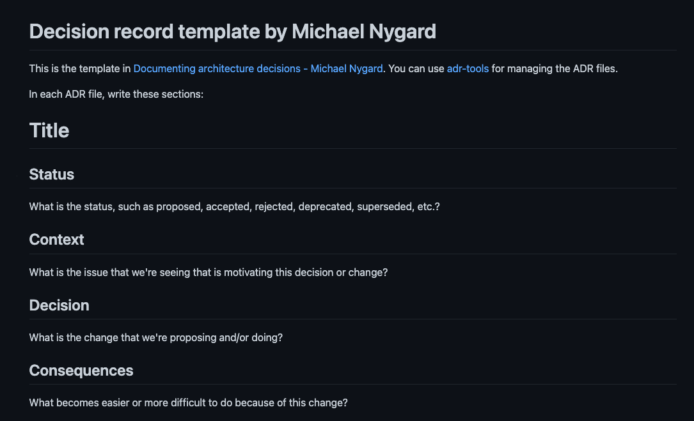
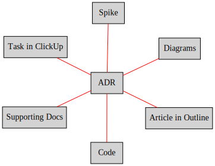

Architecture represents the significant design decisions that shape a system, where significant is measured by cost of change.— Grady Booch
What is Architecture Decision?
An Architectural Decision (AD) is a software design choice that addresses a functional or non-functional requirement that is architecturally significant.
What is Architecture Decision Record?
An Architectural Decision Record (ADR) captures a single AD, such as often done when writing personal notes or meeting minutes; the collection of ADRs created and maintained in a project constitutes its decision log.
It should be as easy as possible to:
write down the ADRs
version them!
Markdown 🔥
ADR Template

ADR Template in Markdown
# Title
## Status
What is the status, such as proposed, accepted, rejected, deprecated, superseded, etc.?
## Context
What is the issue that we're seeing that is motivating this decision or change?
## Decision
..
# Title
## Status
What is the status, such as proposed, accepted, rejected, deprecated, superseded, etc.?
## Context
What is the issue that we're seeing that is motivating this decision or change?
## Decision
What is the change that we're proposing and/or doing?
## Consequences
What becomes easier or more difficult to do because of this change?
ADR =~ Google Template
ADR In a nutshell
ADRs should be considered aslightweight records of decision making,linking in other documents and content when required,keeping ADR itself compact and to-the-point.It can live anywhere, in any format.

Who writes ADRs and why?
ADRs can and should be written by any engineer in the team
Should be considered as living documents
Common framework for communication
Stronger team alignment, share best practices
Tooling
adr-tools - bash scripts to manage ADRs in the Nygard format
log4brains - CLI and web UI to log and publish your ADRs as a static website